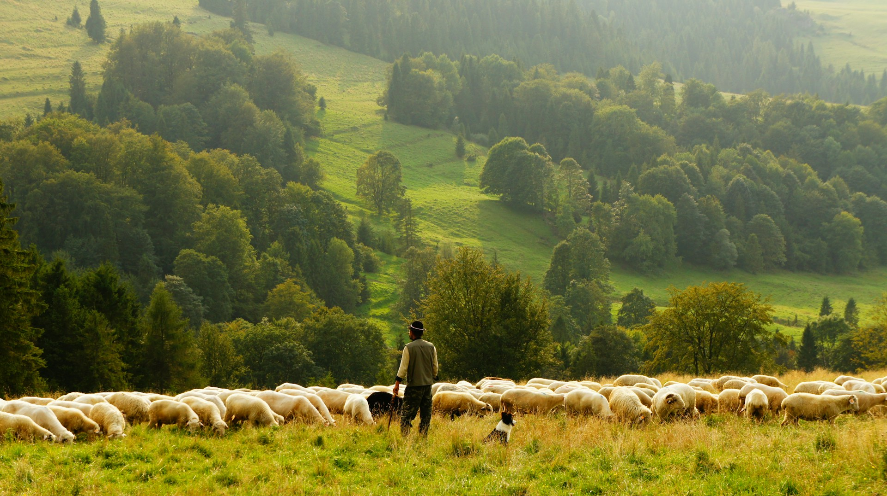

Transformando ideas en soluciones web funcionales
Diseño lógica back-end robusta y escalable que sirve de puente entre la visión del proyecto y una experiencia web accesible y optimizada.
Alodía Hernández
Desarrolladora Web
Especializada en back-end y con experiencia en el stack completo, desde la base de datos hasta el despliegue en producción.
Habilidades Técnicas
Mis proyectos destacados
Plataforma E-learning para la Enseñanza de Español Online
Plataforma educativa bilingüe para la enseñanza de español como lengua extranjera. Incluye gestión de contenido para profesores y alumnos, sistema de entrega de tareas y e-commerce con carrito de compra para cursos premium.

Web corporativa y de divulgación para Ganadería Bovina Extensiva
Web informativa para una explotación de ganadería bovina extensiva, enfocada en transparencia y divulgación de la marca. Incluye información del ganado, trazabilidad del producto, participación en concursos y formulario de contacto directo con el cliente.
Tienda online de bisutería
E-commerce para la venta de bisutería con catálogo filtrable por categoría, gestión de stock simulada y carrito de compra funcional. Diseño responsive que garantiza una experiencia de compra fluida en cualquier dispositivo.
Página Web Restaurante Italiano
Presencia digital completa para un restaurante italiano, con galería de platos, menú digital y formulario de reservas. Optimizada para móvil, con información de contacto y ubicación de acceso rápido.
¿Hablamos?
Estoy abierta a nuevas oportunidades laborales y a proyectos web. Si tienes algo en mente, escríbeme — te respondo en menos de 24h.